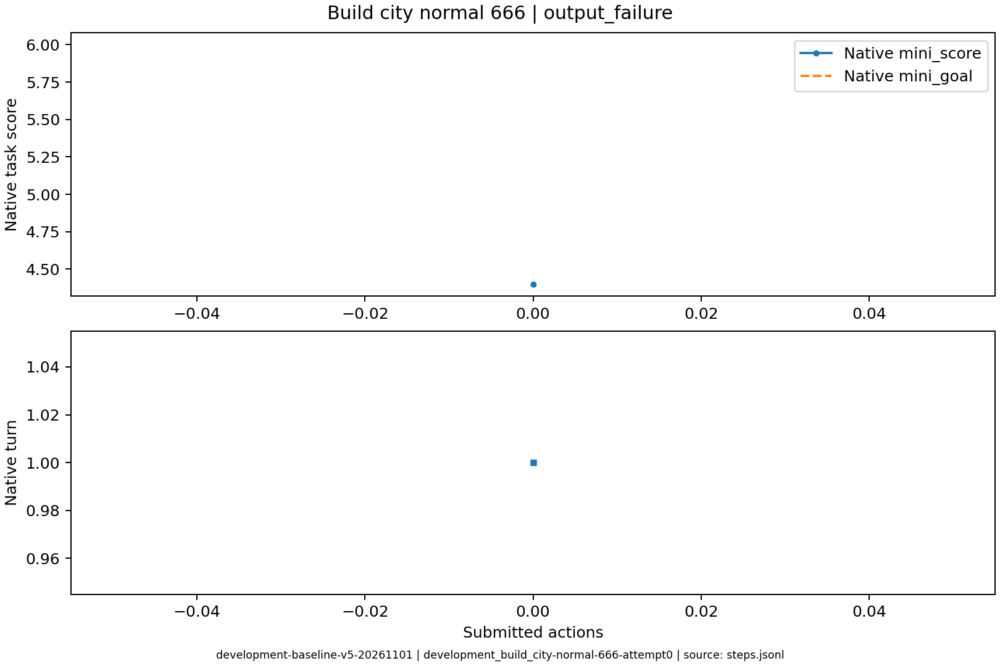
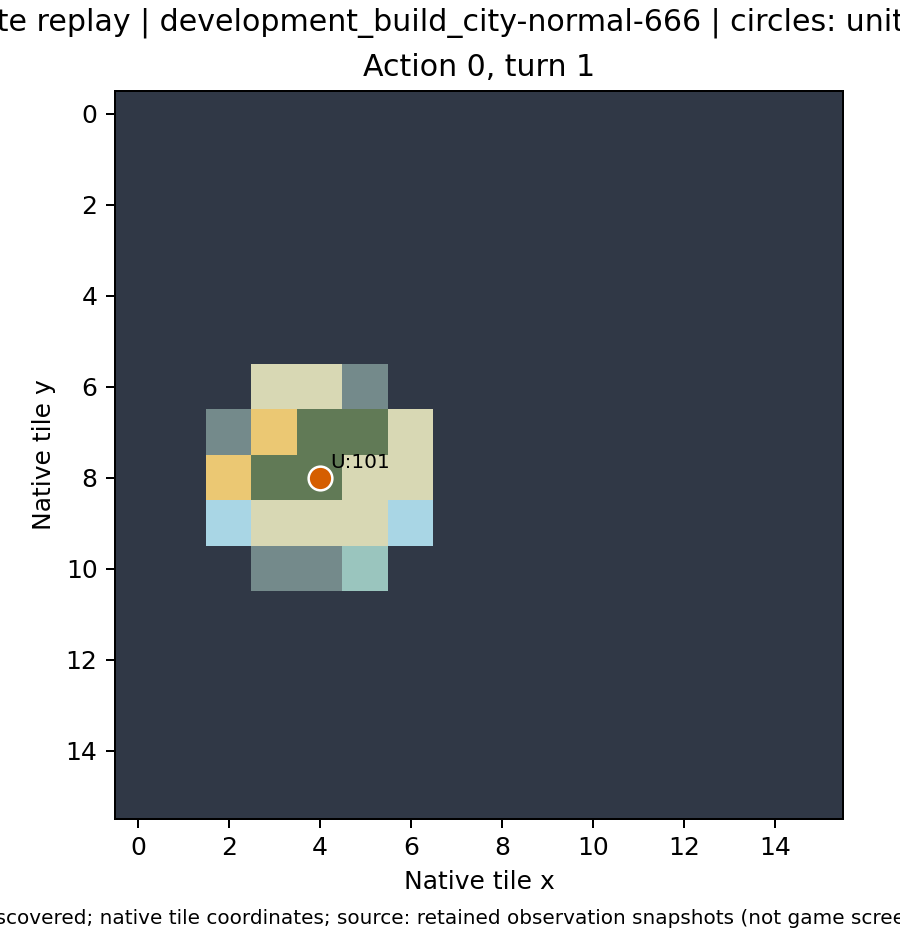

零环境动作即停止，隔离展示输出问题不能被归因于错误游戏操作。
停止原因：output_failure；动作 0；调用 2。
玩家可见状态重建，每次决策一帧；不是游戏屏幕录制。下列模型理由是最终简短输出，不是内部思考过程。
初始观察 · 最终观察 · 完整轨迹 · 全部请求与输出 · 模型当时的任务说明


没有可执行的最终输出
{
"decision_id": "development_build_city-normal-666-attempt0-decision0000",
"env_step": null,
"turn": 1,
"action_submitted": false,
"native_action": null,
"reason": null,
"before_metrics": {
"status": 0,
"success": -1,
"x": 4,
"y": 8,
"mini_score": 4.4,
"mini_goal": 6.0,
"is_mini_success": -1,
"max_turn": 30
},
"after_metrics": null,
"legal_build_city": true,
"before_units": {
"101": {
"x": 4,
"y": 8,
"moves_left": 3,
"health": 20,
"transported": false,
"transported_by": 0,
"occupied": false
}
},
"after_units": null,
"before_cities": {},
"after_cities": null,
"state_changes": null,
"native_notices": [],
"output_errors": [
{
"call_id": "development_build_city-normal-666-attempt0-decision0000-call0",
"error": "Expecting value: line 1 column 1 (char 0)"
},
{
"call_id": "development_build_city-normal-666-attempt0-decision0000-call1",
"error": "Expecting value: line 1 column 1 (char 0)"
}
],
"calls": [
{
"call_id": "development_build_city-normal-666-attempt0-decision0000-call0",
"purpose": "decision",
"finish_reason": "length",
"content": "",
"prompt_tokens": 18494,
"completion_tokens": 8192,
"reasoning_tokens": 8192,
"latency_s": 49.4099702835083
},
{
"call_id": "development_build_city-normal-666-attempt0-decision0000-call1",
"purpose": "correction",
"finish_reason": "length",
"content": "",
"prompt_tokens": 18526,
"completion_tokens": 8192,
"reasoning_tokens": 8192,
"latency_s": 50.33022379875183
}
]
}